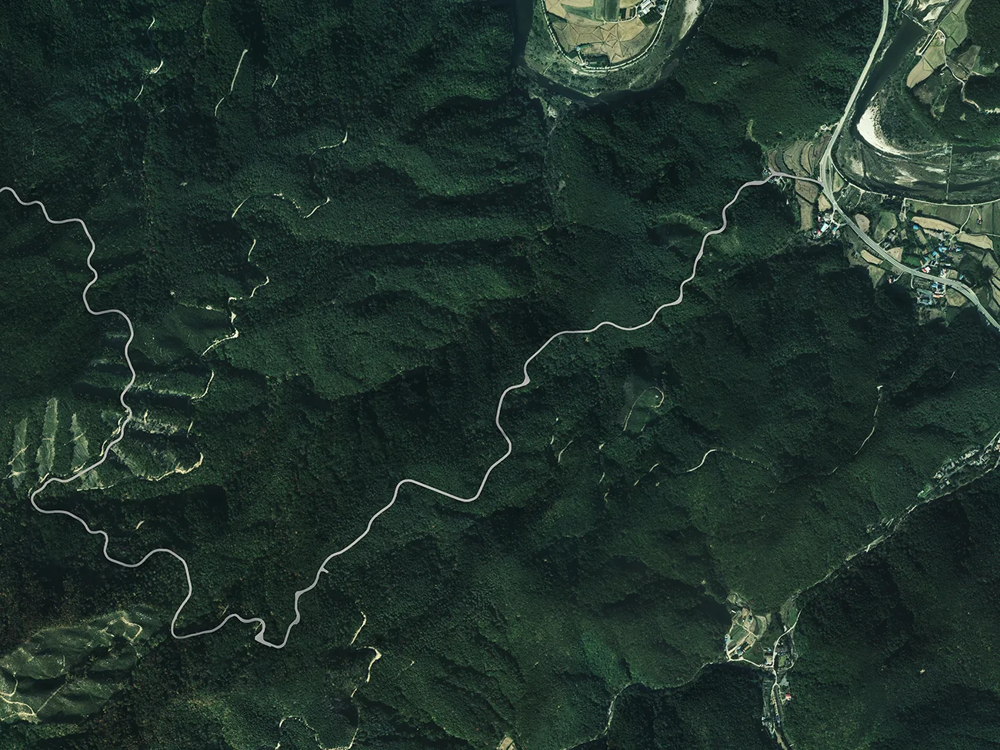
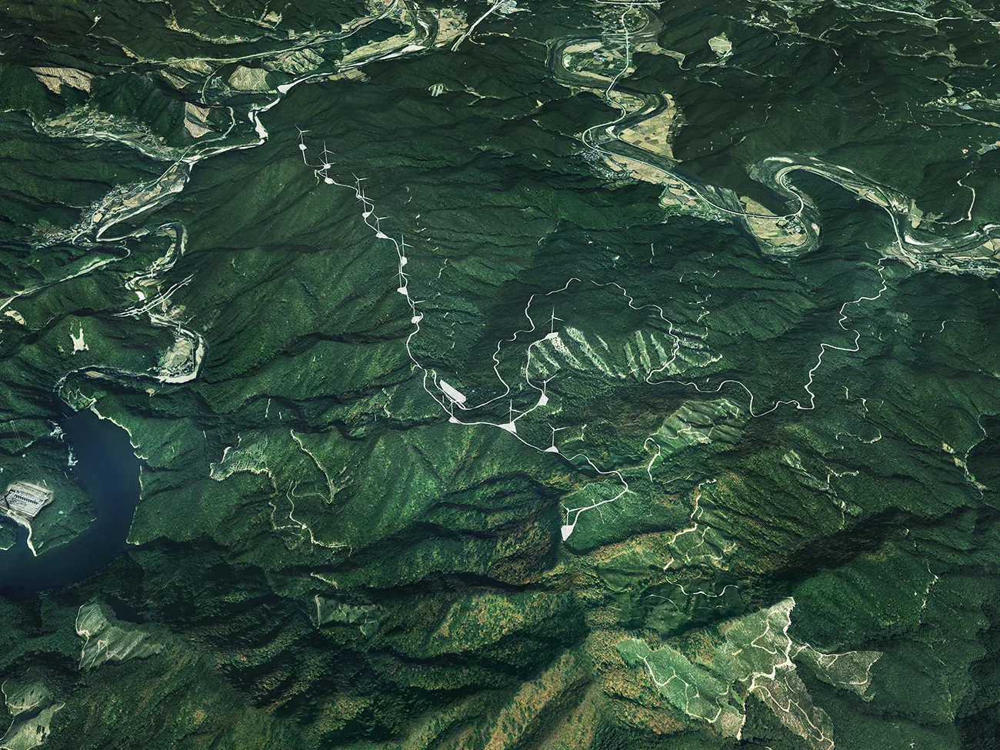
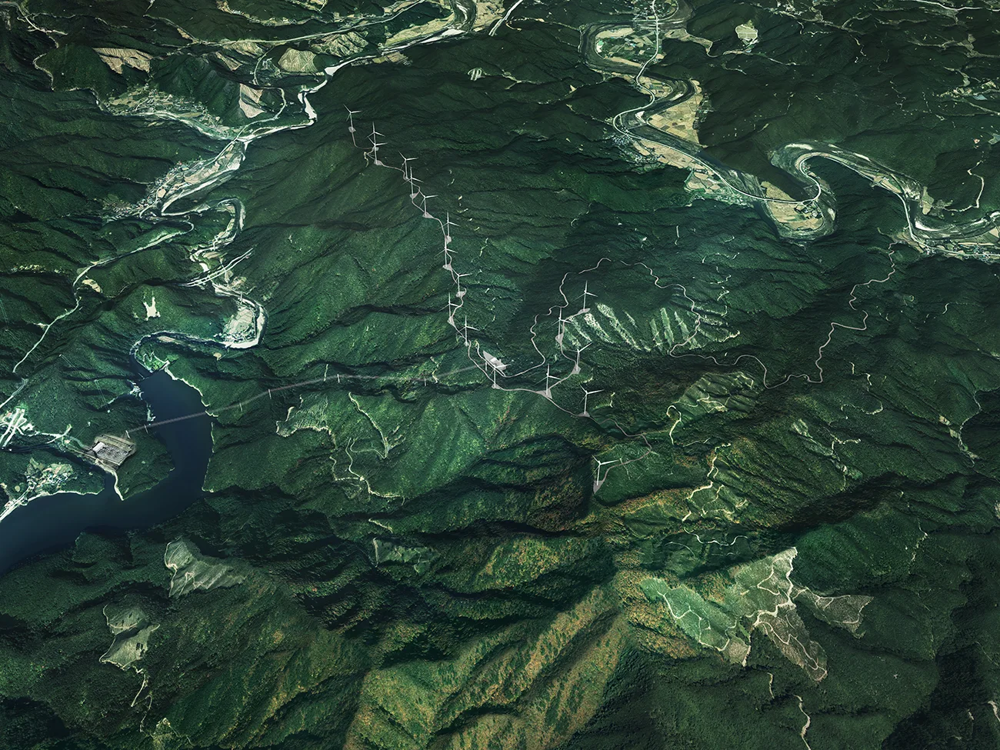
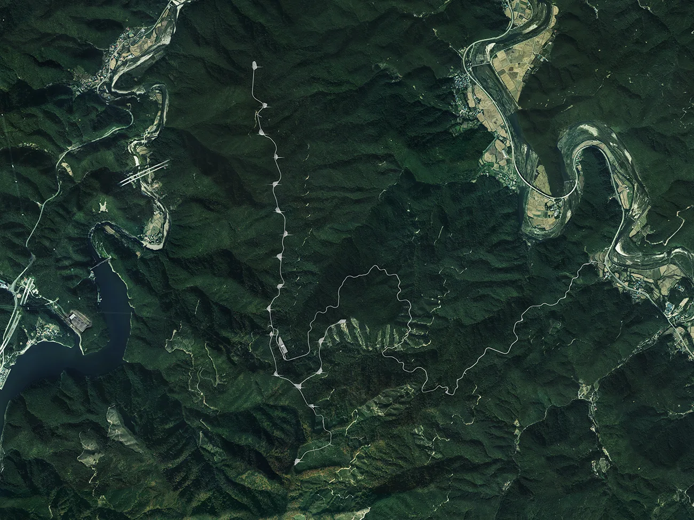
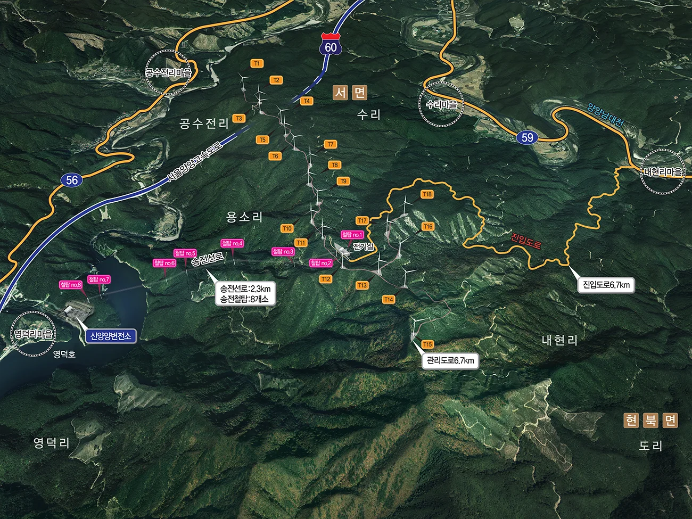
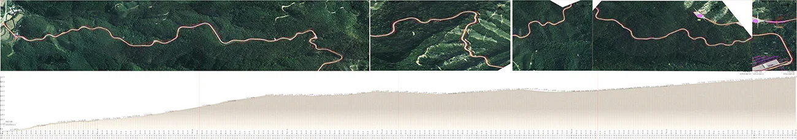
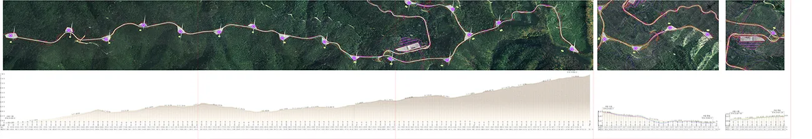

전 세계는 에너지 생산 다각화를 위해 친환경 발전 형태인 풍력 및 태양열, 지열 등 다양한 발전소를 건설하고 있으며 국내에서도 풍력 발전 시설 건설과 제안, 설치를 위한 조감도 제작이 활발하게 이루어지고 있습니다.
이 프로젝트는 강원 영덕호 옆 양양발전소와 연결된 풍력 발전 시설의 기획과 발표회에 사용된 조감도 및 입 단면 평면도 제작 업무이며 진행과정을 소개해드리겠습니다.
프로젝트의 진행과정
먼저 제작하게 될 지역 전체의 위성사진과 지형등고선들을 정리하여 실제 스케일과 1:1 비율의 모델링을 제작합니다. 위성사진과 모델링이 정확하게 매치되었는지 확인하며 조감도와 배치도의 진행 방향과 이미지들을 먼저 검토하게 됩니다.
풍력발전 작업과정 소개 001

풍력발전 작업과정 소개 002

풍력발전 작업과정 소개 003

풍력발전 작업과정 소개 004

관리도로 및 진입도로 지형도면을 받아 렌더링 및 컬러링을 통해 결과물을 제작합니다.

결과물
진입도로 종평면도

관리도로 종평면도


마치며
풍력발전 및 태양열 시설을 설치 제안하기 위한 조감도 제작 전문 기업 메이크 그룹은 다양한 고객의 요구에 대응할 수 있는 전문 인력과 시설을 보유하고 있고 다양한 경험을 보유하고 있습니다.
조감도 제작을 맞겨주시면 저렴하며 기대 이상의 좋은 결과물로 보답하겠습니다.
이상 메이크 그룹이였습니다. 감사합니다.
홈페이지
https://www.makegroup.co.kr/
블로그
https://blog.naver.com/makegroupcg